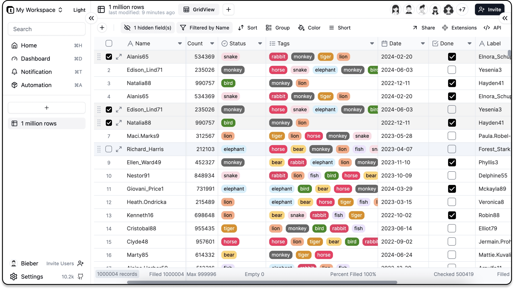
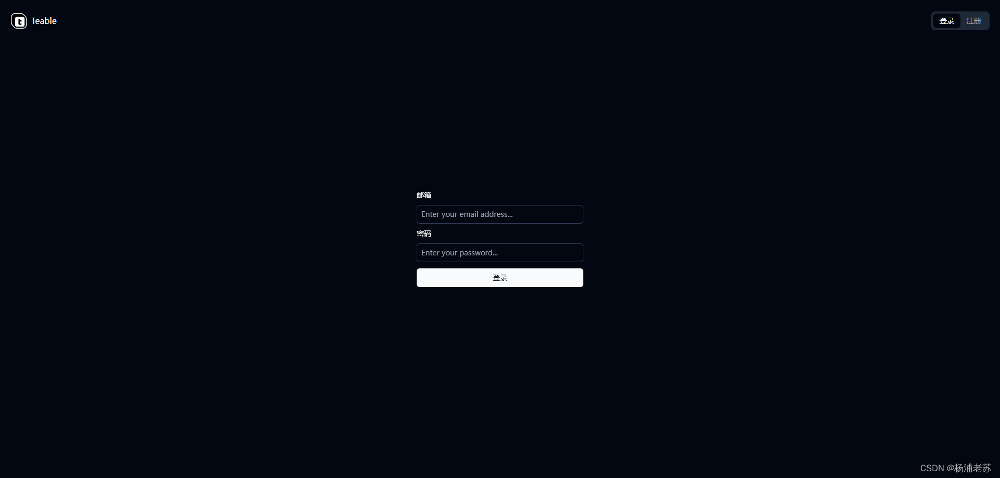
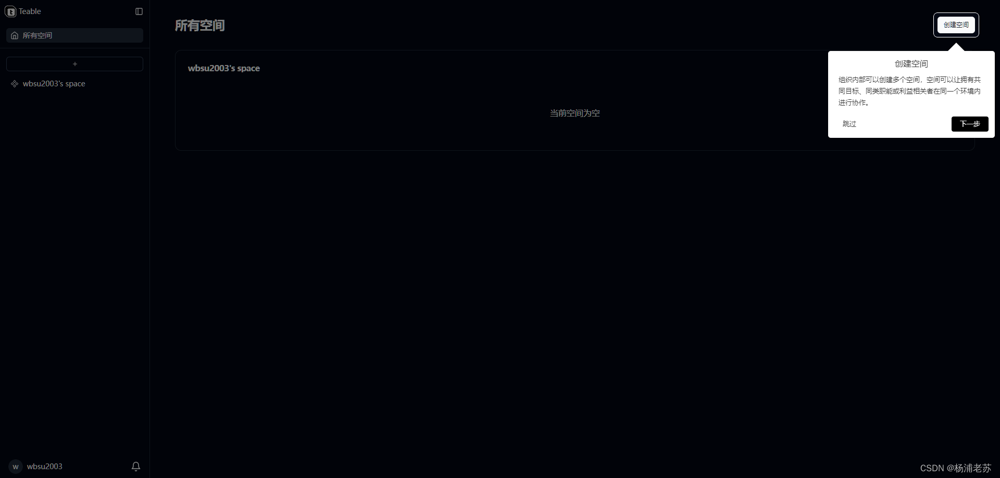
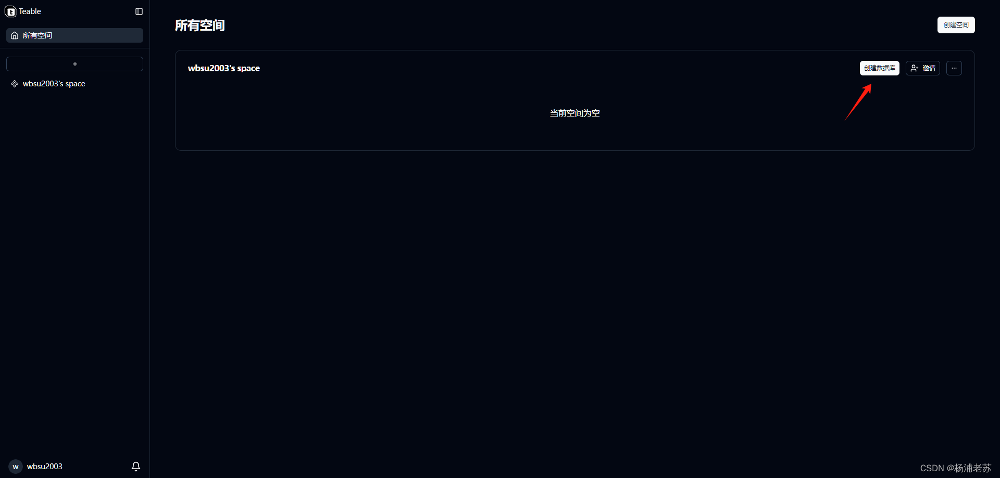
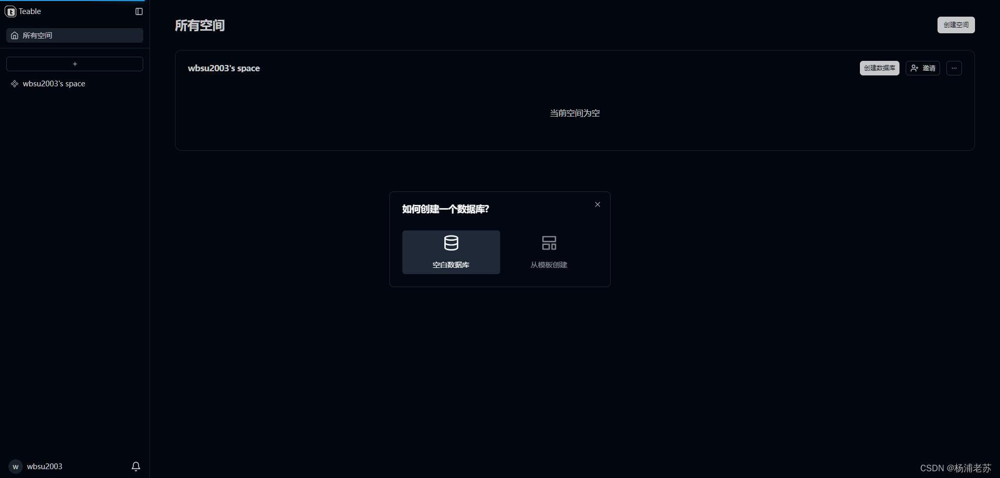
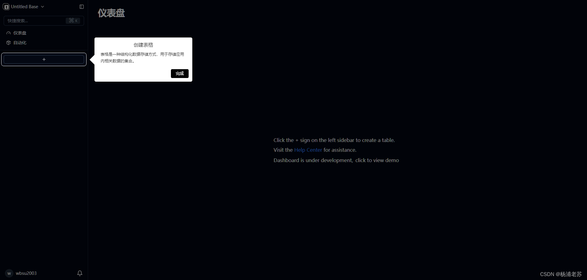
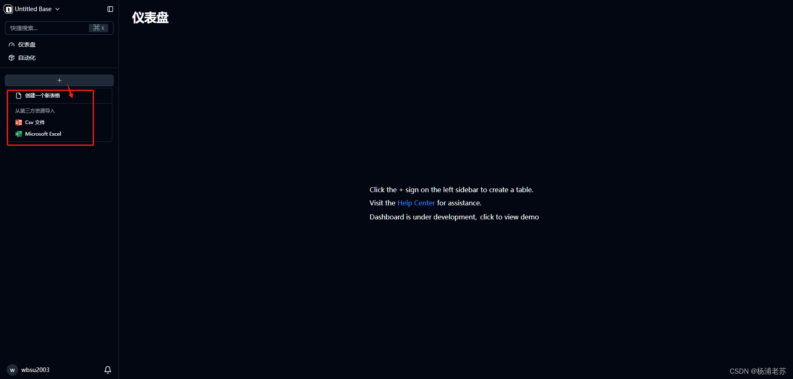
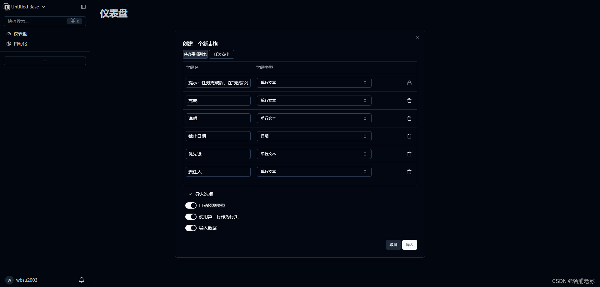

Teable
 项目首页
项目首页
Teable 是一个基于 Postgres 构建的超快速、实时、专业、开发人员友好的无代码数据库。它使用简单的、类似电子表格的界面来创建复杂的企业级数据库应用程序。








 如何部署在线 Teable
如何部署在线 Teable
什么是 Teable
- Teable 是一个创新的在线平台，旨在提供高效、实时的代码分享和协作体验。它的目标是将编程教学、代码审查和团队合作提升到新的层次，通过直观的界面和强大的功能，让用户能够轻松地在任何设备上进行代码交流。
功能列表
-
实时协作：Teable 使用WebSocket等先进技术实现真正的实时同步，无论你在世界何处，都能立即看到队友的改动，如同共用同一台电脑。
-
版本控制：内置Git支持意味着你可以随时查看历史更改，回滚错误，并理解代码演进的过程。
-
代码高亮和智能提示：基于成熟的Ace Editor，Teable 提供了丰富的语言支持和代码高亮，还有自动补全功能，提高编写效率。
-
轻量级API：开发者可以通过其RESTful API扩展和集成Teable到自己的工作流程中，打造个性化的开发环境。
-
安全与隐私：Teable 遵循最佳实践，保护用户数据的安全性和隐私性，支持私有仓库创建和访问控制。